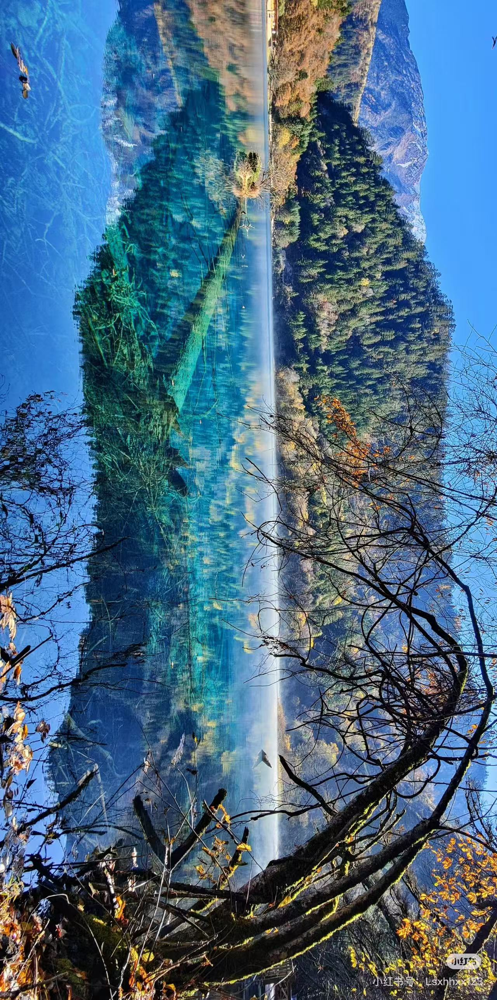
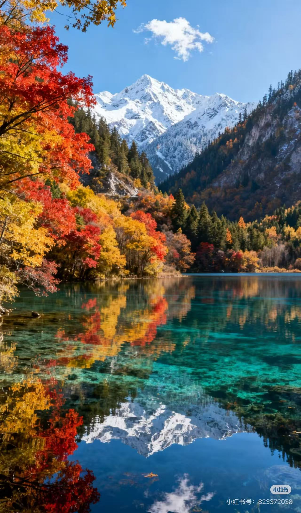
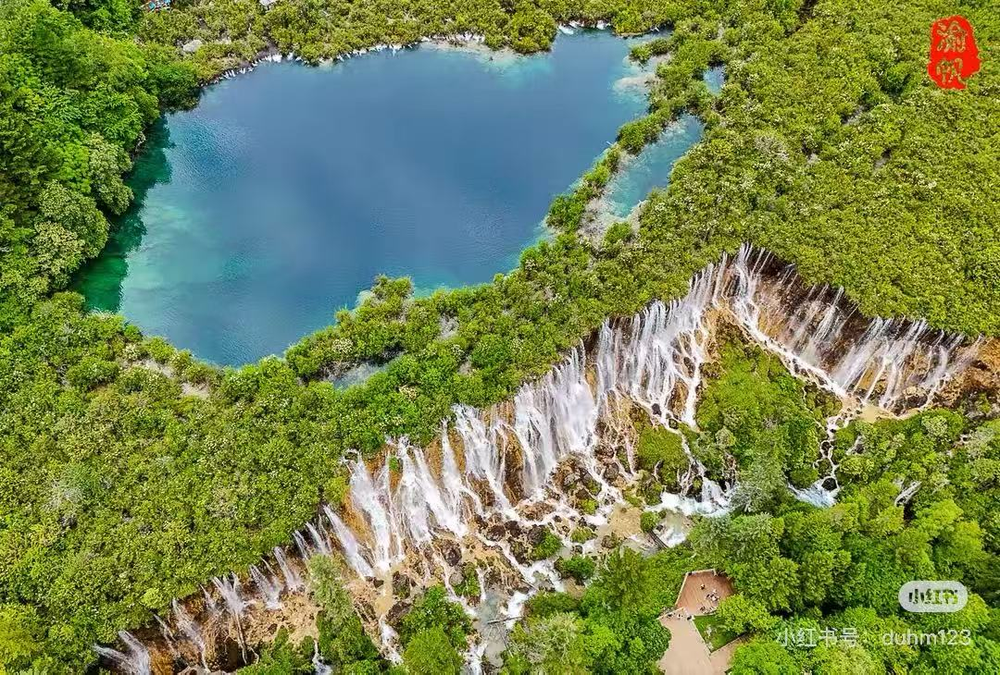

景区介绍
Introduction
高原秘境，水与森林的童话
Plateau wonderland of water and forests
九寨沟位于四川省阿坝藏族羌族自治州，以翠海、叠瀑、彩林、雪峰、蓝冰和藏情而闻名，被誉为“人间童话世界”。
景区由树正、日则、则查洼三大沟组成，108个海子串联成高山湖泊群，湖水因光线与矿物质呈现碧蓝、翠绿、琥珀等多变色彩。



碧海叠瀑
Lakes & Waterfalls
108个海子串联，湖水呈现多层次蓝绿，珍珠滩、诺日朗等瀑布群壮观磅礴。
悠久历史
Long History
形成于数百万年前的高山冰川与喀斯特作用，是川西高原最瑰丽的自然景观之一。
雪山森林
Peaks & Forests
雪峰环抱、冷杉与彩林交织，四季呈现冰蓝、翠绿、金黄、银装的层次变化。
藏羌文化
Tibetan & Qiang Culture
藏羌村寨、经幡与特色民俗点缀山谷，生态与文化保护并重。